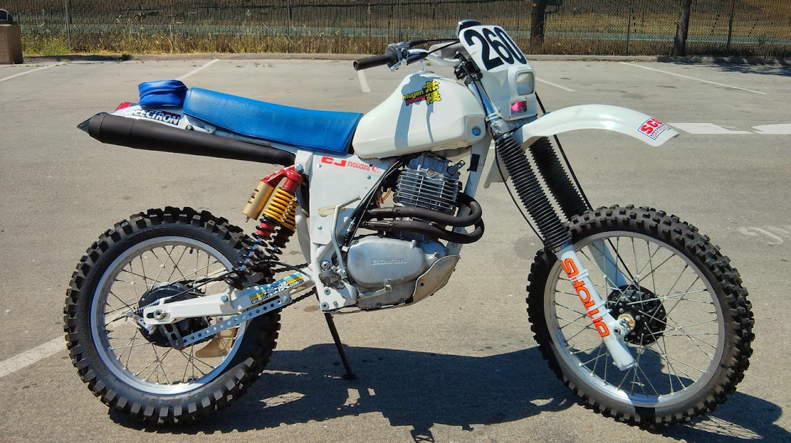

When I got the first C&J frame off eBay (white frame) in 2010, my research immediately brought me to this photo of the elusive "White Machine" built by Al Baker in 1980/1 and ridden by Johnny O'Mara. I started considering building a replica, from the ground up.
As time went by and my research progressed, I learned that there had been (at least) another similar yet different bike, one built for the desert expanses of the Baja.
This motorcycle was to become the living laboratory for Al Baker's development of the XR500 in partnership with Honda Japan and Mugen.